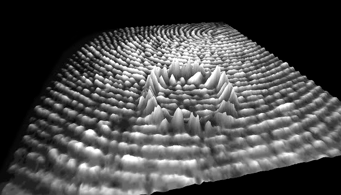

|
|
Media Arts and Technology |
End of Year Show 2014 Friday June 6th 2014, Elings Hall, UC Santa Barbara |
Digital sonus

Your Vital Virtual is a dynamic work, which generates virtual surfaces from the changing mental state of the user. A brainBrane of sorts, unveiling a translated perspective of the visceral nature of the user’s mental actions through modulating virtual form and sound. A elastic surface dances, being pushed and pulled, modulated by the users engagement, as a field of the current action potential is scanned and presented as a changing state space. The colors act as indicators of attention and meditation, while an accompanying soundScape is generated and spatialized within the environment, offsetting the visual proportions into temporal and harmonic cues. At any point the user can freeze the process and select a moment of his/her particular interest. This frozen moment can be saved and using 3d printing, create a physical model of that particular moment. Drawings within the architectural realm are also produced as another expressive modality with the focus on the moment in action and modulation. Alternity is an evolving trans-disciplinary installation and research project. The work in its various forms and artifacts seeks to address and experiment with the intimate connection between architecture and the body. Real-time sampling of the users biometrics (EEG data) and spatial tracking is translated through feedback and processed for harmonic and coherent characteristics. The changing state is rendered into an immersive environment composed of projections and sounds to be experienced and interpreted by the user. The creative interest of developing works that provide an experience that allows the world to connect to the reflective and reflexive processes that may provide new realms of dialogue in the architectural discourse. What if we can connect to the geometry around us, objects that cast shadows and embody our internal physical and mental states? Connecting the user to space through interaction, pushing up the line and redivided by composition and interpretation. Making space resonate with the body and placing the human as a focus of our constructed environments.
Artist: F. Myles Scottio